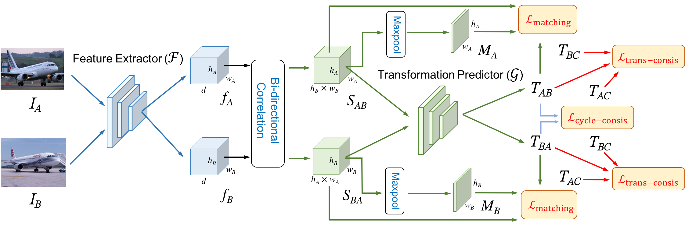

Abstract
Establishing dense semantic correspondences between object instances remains a challenging problem due to background clutter, significant scale and pose differences, and large intra-class variations. In this paper, we address weakly supervised semantic matching based on a deep network where only image pairs without manual keypoint correspondence annotations are provided. To facilitate network training with this weaker form of supervision, we 1) explicitly estimate the foreground regions to suppress the effect of background clutter and 2) develop cycle-consistent losses to enforce the predicted transformations across multiple images to be geometrically plausible and consistent. We train the proposed model using the PF-PASCAL dataset and evaluate the performance on the PF-PASCAL, PF-WILLOW, and TSS datasets. Extensive experimental results show that the proposed approach performs favorably against the state-of-the-art methods.

Citation
Yun-Chun Chen, Po-Hsiang Huang, Li-Yu Yu, Jia-Bin Huang, Ming-Hsuan Yang, and Yen-Yu Lin, "Deep Semantic Matching with Foreground Detection and Cycle-Consistency", in Asian Conference on Computer Vision, 2018.
BibTex
@inproceedings{Chen_WeakMatchNet_2018,
author = {Chen, Yun-Chun and Huang, Po-Hsiang and Yu, Li-Yu and Huang, Jia-Bin and Yang, Ming-Hsuan and Lin, Yen-Yu},
title = {Deep Semantic Matching with Foreground Detection and Cycle-Consistency},
booktitle = {Asian Conference on Computer Vision (ACCV)},
year = {2018}
}
Code
Weakly Supervised Semantic Matching Network

References
- • Choy et al. Universal Correspondence Network. In NIPS, 2016.
- • Han et al. SCNet: Learning Semantic Correspondence. In ICCV, 2017.
- • Ham et al. Proposal Flow: Semantic Correspondences from Object Proposals. TPAMI, 2017.
- • Rocco et al. Convolutional Neural Network Architecture for Geometric Matching. In CVPR, 2017.
- • Rocco et al. End-to-End Weakly-Supervised Semantic Alignment. In CVPR, 2018.